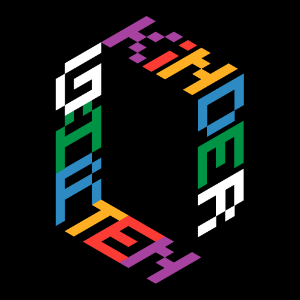

Coletivo Kindergarten

O coletivo Kindergarten é um grupo artístico interdisciplinar que atua entre a instalação e a performance, explorando novas formas de criação, colaboração e pensamento. Com uma estrutura flexível, integra diferentes artistas e profissionais segundo as necessidades de cada projeto, promovendo um espaço aberto à experimentação.
A sua prática cruza saberes técnicos, sensoriais e conceptuais, dando origem a propostas que habitam diferentes campos: do material ao imaterial. Mais do que seguir formatos fixos, o coletivo procura criar ligações entre pessoas, disciplinas e formas de estar, desafiando fronteiras e estimulando novas formas de relação com o mundo.
Já mostraram o seu trabalho no Shopyard, gnration, Noite Branca de Braga, SOMA, Casa dos Crivos, FISGA Space e realizaram residência em Lanzarote.
Media arts collective · Braga/Porto